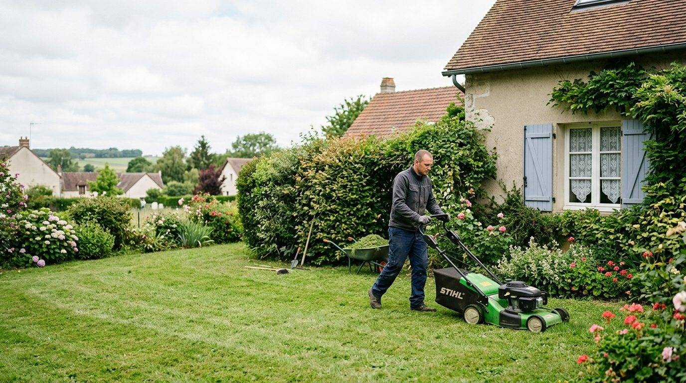

Nos prestations
Créer et entretenir votre jardin à Montgeron
De l'entretien courant à la création d'espaces verts, Julien Zini intervient sur votre jardin à Montgeron.



Entretien
Un jardin bien entretenu
Tonte, taille et désherbage : l'entretien courant de votre jardin, selon vos besoins.
- Tonte de pelouse
- Taille de haies et d'arbustes
- Désherbage des massifs
- Ramassage des feuilles

Création d'espaces verts
Des aménagements adaptés à votre terrain
Création de massifs, plantations et engazonnement : parlez-nous de votre projet.
- Création de jardins et de massifs
- Plantation d'arbres, d'arbustes et de vivaces
- Engazonnement, pose de gazon
- Allées et terrasses

Plantations

Un projet pensé avec vous
Décrivez-nous votre jardin
Appelez ou envoyez une demande : nous reviendrons vers vous pour discuter de votre projet.